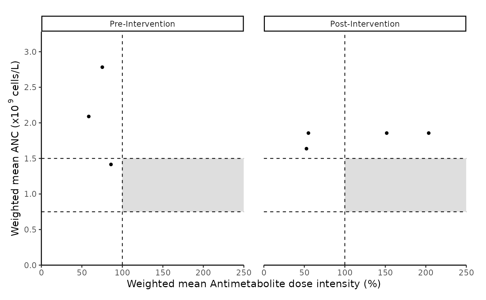
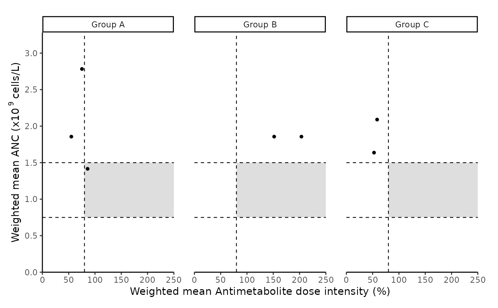

Plot summarized maintenance therapy (MT) data to compare two or more cohorts
Source:R/compare_cohorts.R
compare_cohorts.RdCreate an integrated summary graph facetted (by cohort). Graph illustrates weighted mean absolute neutrophil count (ANC) and dose information for each patient.
Usage
compare_cohorts(
input_files_path,
unit,
anc_range,
dose_intensity_threshold,
method,
intervention_date,
group_data_path
)Arguments
- input_files_path
Path to folder with MT csv files (in quotes)
- unit
Choose either "million" or "billion".
"million" = million cells/L (x\(10^{6}\) cells/L or cells/\(\mu\)l)
"billion" = billion cells/L (x\(10^{9}\) cells/L or x\(10^{3}\) cells/\(\mu\)l)
- anc_range
Vector with lower and upper thresholds of absolute neutrophil count target range: (c(lower threshold, upper threshold))
Ensure units of anc_range and patient data (unit) match.
- dose_intensity_threshold
numeric value of reference drug dose intensity (%).
- method
Choose from "M1" or "M2".
"M1" = Comparison of cohorts that started MT therapy before or after a particular date of intervention (intervention_date).
"M2" = Comparison of MT therapy between pre-determined groups.
- intervention_date
Only applicable if method = "M1". Provide date in yyyy-mm-dd format (in quotes)
- group_data_path
Only applicable for method = "M2". Path to EXCEL FILE containing "group" information. Ensure "ID" and "Group" columns are present.
Examples
cohort_path = paste0(system.file("extdata/processed_data/", package = "allMT"), "/")
compare_cohorts(input_files_path = cohort_path,
method = "M1", intervention_date = "2020-12-01",
unit = "billion", anc_range = c(0.75, 1.5), dose_intensity_threshold = 100)
#> NOTE: Including all files in input folder
#> Comparative summary graph created
#> Quitting
#> Bye Bye: Did you know that space is silent :)?

# \donttest{
group_path = system.file("extdata/grouped_data/group_data.xlsx", package = "allMT")
compare_cohorts(input_files_path = cohort_path,
method = "M2", group_data_path = group_path,
unit = "billion", anc_range = c(0.75, 1.5), dose_intensity_threshold = 80)
#> NOTE: Including all files in input folder
#> Joining with `by = join_by(Pat_ID)`
#> Comparative summary graph created
#> Quitting
#> Bye Bye: Did you know that space is silent :)?

# }